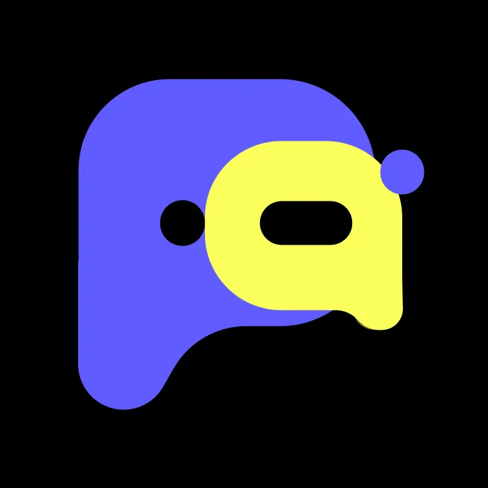
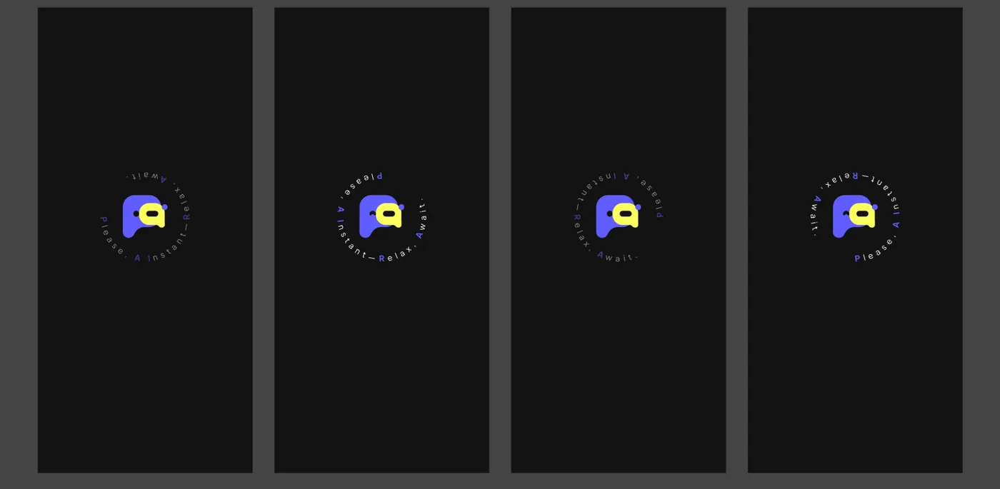
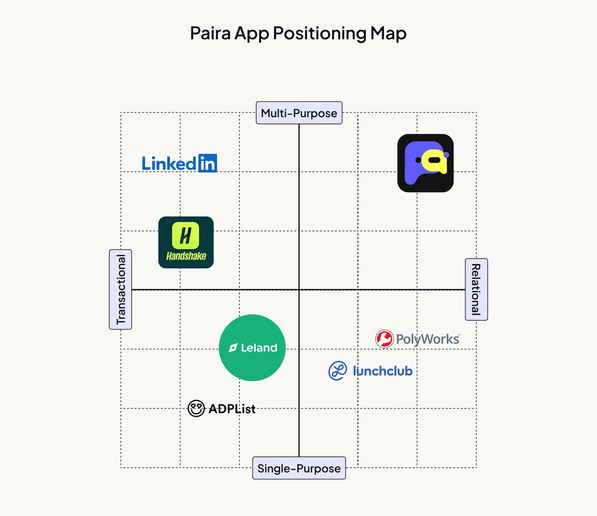

Role
Founding Product Designer
Owned product direction, core experience, visual identity, and launch design.
I helped define the product, lead its request-first pivot, and build the brand and design system from concept through launch.
Founding Product Designer
Owned product direction, core experience, visual identity, and launch design.
Aug 2025–Present
From early concept and pivot through beta and App Store launch.
Early-stage startup team
Partnered across product, engineering, growth, and community.

Paira began with a broad ambition to make networking feel more human. My job was to turn that ambition into a product model, an understandable experience, and a brand people could trust.
People do not need more connections. They need the right person for a real need.
Product framing, request and matching flows, the visual identity, the design system, and launch-facing creative.
A request-led product shipped after growing to 100+ waitlist users and 50+ beta testers.
Profile discovery still made users perform an identity before they could ask for help. A request gave each interaction a reason, a moment, and a clear way to respond.
Browse people first, then invent a reason to connect.
State the need first, then meet someone relevant.
The pivot made intent visible. It lowered the social cost of asking and gave AI a more useful signal than a profile alone.
The screens below are structured placeholders for the final product assets. They preserve the storytelling and layout without presenting invented UI.
The system captures the need, context, and desired outcome before suggesting an introduction with a clear reason why.
A request stays legible from posting to conversation, so both sides know what is needed and what happens next.
People can move between asking and helping. Contribution becomes visible without turning connection into a popularity contest.
The system uses high-contrast color, soft forms, and direct language to make an unfamiliar AI product feel energetic but approachable.

The two-part mark holds both sides of the exchange: asking and helping.
Color carries action and recognition while neutral surfaces keep dense social content readable.


I extended Paira across launch campaigns, beta education, community events, and the public website while keeping the voice recognizably ours.
I connected the core product to onboarding, referral, and premium pathways, then refined those flows with startup goals and user feedback.
Set expectations and collect just enough context to create a useful first match.
Turn a successful interaction into a credible invitation, not a generic growth prompt.
Frame paid value around better access and control without weakening trust.
The live system has supported 500+ matches per day across a community spanning 36 schools and 30 companies.
At 0→1 stage, strategy and craft cannot be separated. The pivot only became credible once the product model, interface, language, and brand all told the same story.
I would compare the quality of introductions across request types and use those patterns to tune how much AI explanation each match needs.
The official site carries the current public positioning. Load it here only when needed, or open it in a separate tab.